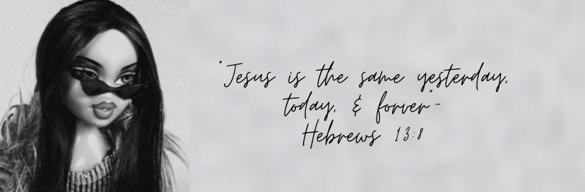
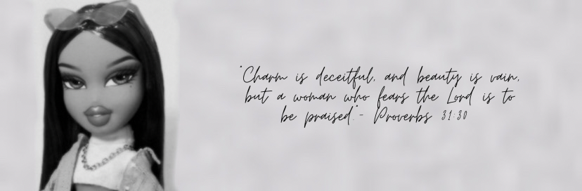
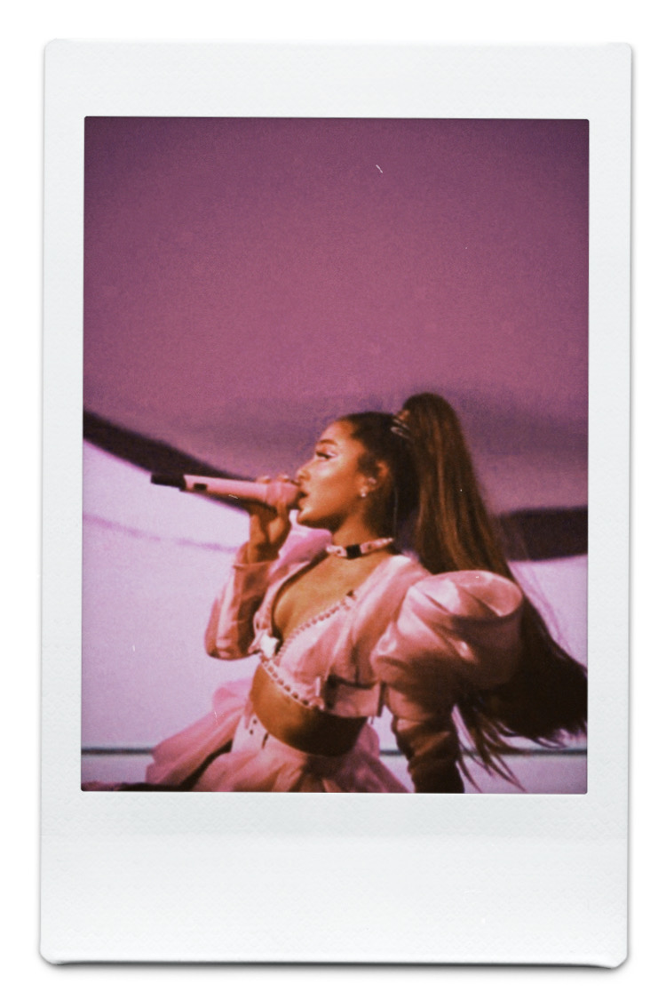
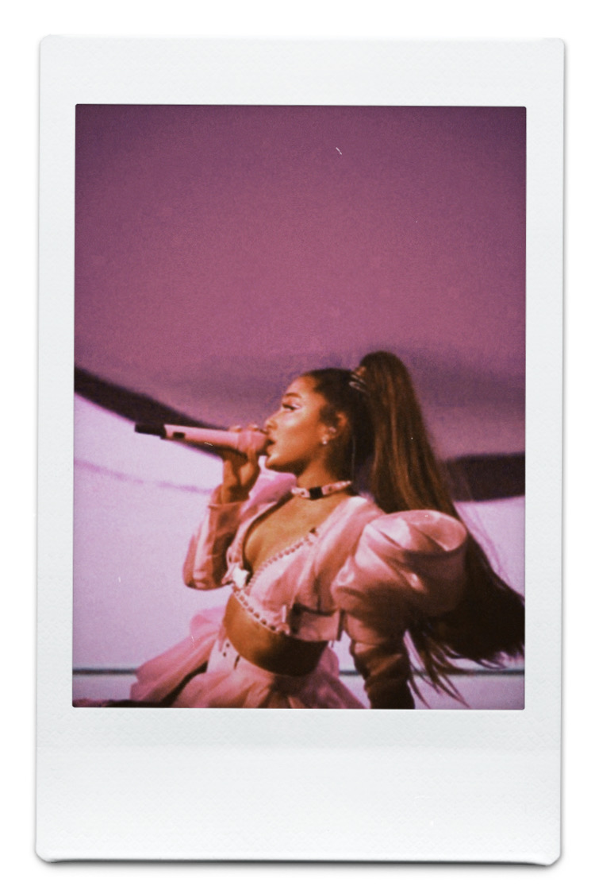

Bible Reflection
Bible Reflection w Bella, 28 March, 2022
Using S O A P Method
S - scripture: "Jesus is the same yesterday, today, and forver" - Hebrews 18:5"
0 - observation: I think that scripture speaks for itsef, it really speaks out though. It's a good reminder for everyone. It tells me that Jesus nevr changes and that he's always got me. Jesus' love never changes, his love is unconditional.
A - application: I need to memorise this verse, it's very special. It reminds me keep being faithful to God. It's like reasurrance & a sense of comfort.
P - prayer: Dear Heavenly Father, thank you for everything, thank you for your love, mercy, & glory. Do continue to guide us & remind us that you will always be their for us. In Jesus' Humble Name.. Amen !
Daily Bible Scripture
Daily Bible Scripture w Destiny, 29 March, 2022
Using SOAP Method Again
S - scripture: "Charm is deceitful, and beauty is vain, but a woman who fears the Lord is to be praised." - Proverbs 31:30
O - observation: This tells me that it doesn't matter about your beauty & all the material things you have, the only thing that matters is your relationship with God. You might get praised for your beauty (vainess) & for your material things by other people, but God in the heavens will praise you for being fearful & faithful.
A - application: I feel like this is such an important & good reminder to everyone of all genders. I will use this to remind myself that the only beauty that matters is the true beauty inside.
P - prayer: Dear Almighty Father, thank you everything. thank you for blessing us with life & your amazing love. I pray for myself & everyone especially women in this world who haven't found themselves. I pray that we may know worth & that we may stay grounded & be close to you. In Jesus' humble name, Amen !
About Me
Name: Virginia Manukia
Age: 14 years old
Ethnicity: Tongan/European
Popular Post

 

Follow me
zont zo it.. zont